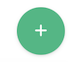
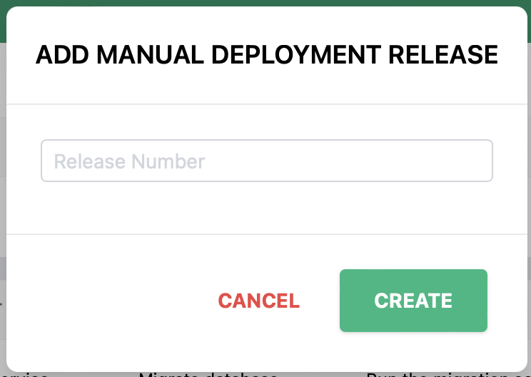
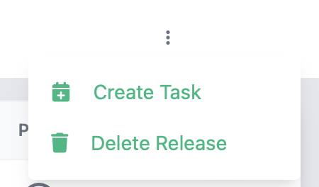
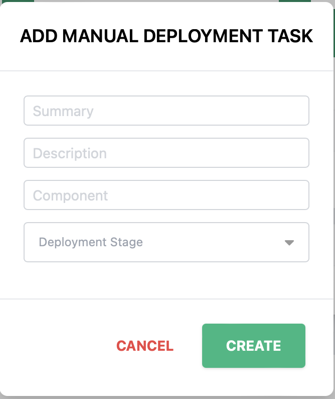

Viewing and Managing Manual Tasks
The manual tasks page lets a user manage a list of releases and manual tasks that are needed in those releases for a system.

Creating a release
- Click the  button at the bottom of the screen
-
The create new release dialog will appear

-
Enter the new release name (This is required)
- Click Save to create the release
Deleting a release
To delete a release, find the row with the release to be deleted and click the 3 vertical dots to open the action menu and select Delete Release. Note: This will delete all tasks in that release too.

Create a task
- Find the row with the release to add a task for and click the 3 vertical dots to open the action menu and select Create Task.
-
The create new task dialog will appear

-
Enter the task summary (This is required)
- Enter the task description
- Enter the task component (This is required)
- Select the task execution stage, either pre or post deployment (This is required)
- Click Save to create the task
Delete a task
To delete a task, find the row with the task to be deleted and click the 3 vertical dots to open the action menu and select Delete Task.
Change task or release status for an environment
To change the status of a given task or release in a specific environment, click the icon showing the status. This will open the status change dialog. Choose the new status (Pending, Complete, Not Required) and click Save.